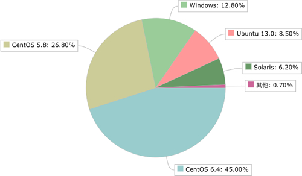
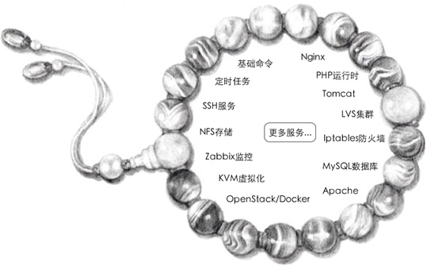

首页 > Shell > Shell基础（开胃菜）
Shell是运维人员必须掌握的技能
Linux 运维人员就是负责 Linux 服务器的运行和维护。随着互联网的爆发，Linux 运维在最近几年也迎来了春天，出现了大量的职位需求，催生了一批 Linux 运维培训班。
如今的 IT 服务器领域是 Linux、UNIX、Windows 三分天下，Linux 系统可谓后起之秀，特别是“互联网热”以来，Linux 在服务器端的市场份额不断扩大，每年增长势头迅猛，开始对 Windows 和 UNIX 的地位构成严重威胁。
下图是 2016 年初国内服务器端各个操作系统的市场份额：
可以看出来，Linux 占 80% 左右（包括 CentOS、Ubuntu 等），Windows 占 12.8%，Solaris 占 6.2%。在未来的服务器领域，Linux 是大势所趋。
Linux 在服务器上的应用非常广泛，可以用来搭建 Web 服务器、数据库服务器、负载均衡服务器（CDN）、邮件服务器、DNS 服务器、反向代理服务器、VPN 服务器、路由器等。用 Linux 作为服务器系统不但非常高效和稳定，还不用担心版权问题，不用付费。
正是由于 Linux 服务器的大规模应用，才需要一批专业的人才去管理，这群人就是 Linux 运维工程师（OPS）。
OPS 的主要工作就是搭建起运行环境，让程序员写的代码能够高效、稳定、安全地在服务器上运行，他们属于后勤部门。OPS 的要求并不比程序员低，优秀的 OPS 拥有架设服务器集群的能力，还会编程开发常用的工具。
OPS 这项工作的细节内容包括：
这些任务只要登录远程服务器，或者去机房连接服务器（下图所示）就能够完成，为什么要用 Shell 编程呢？
图：OPS 在机房中用笔记本连接服务器
因为 OPS 面对的是成千上万台的服务器，不是十台八台，你总不能把同样的工作重复成千上万遍吧，那时估计黄花菜都凉了，市场也成一片红海了。
服务器一旦多了，这些人力工作都需要自动化起来，跑一段代码就能在成千上万台服务器上完成相同的工作，例如服务的监控、代码快速部署、服务启动停止、数据备份、日志分析等。
Shell 脚本很适合处理纯文本类型的数据，而 Linux 中几乎所有的配置文件、日志文件（如 NFS、Rsync、Httpd、Nginx、MySQL 等），以及绝大多数的启动文件都是纯文本类型的文件。
下面的手链形象地展示了 Shell 在运维工作中的地位：
运维“手链”的组成：每颗“珍珠”都是一项服务，将珍珠穿起来的“线”就是 Shell。
Shell 脚本是实现 Linux 系统自动管理以及自动化运维所必备的工具，Linux 的底层以及基础应用软件的核心大都涉及 Shell 脚本的内容。每一个合格的 Linux 系统管理员或运维工程师，都应该能够熟练的编写 Shell 脚本，只要这样才能提升运维人员的工作效率，减少不必要的重复劳动，为个人的职场发展奠定较好的基础。
Perl 脚本已经成为历史了，现在的 Linux 运维人员几乎不需要了解 Perl 了，最多可以了解一下 Perl 的安装环境。
现在越来越多的公司要求运维人员会 Python 自动化开发，Python 也成了运维人员必备的技能，每一个运维人员在熟悉了 Shell 之后，都应该再学习 Python 语言。
对于一些常见的系统脚本，使用 Shell 开发会更简单、更快速，例如，让软件一键自动化安装、优化，监控报警脚本，软件启动脚本，日志分析脚本等，虽然 Python 也能做到这些，但是考虑到掌握难度、开发效率、开发习惯等因素，它们可能就不如 Shell 脚本流行以及有优势了。对于一些常见的业务应用，使用 Shell 更符合 Linux 运维简单、易用、高效的三大原则。
Python 语言的优势在于开发复杂的运维软件、Web 页面的管理工具和 Web 业务的开发（例如 CMDB 自动化运维平台、跳板机、批量管理软件 SaltStack、云计算 OpenStack 软件）等。
我们在开发一个应用时，应该根据业务需求，结合不同语言的优势以及自己擅长的语言来选择，扬长避短，从而达到高效开发、易于自己维护的目的。
如今的 IT 服务器领域是 Linux、UNIX、Windows 三分天下，Linux 系统可谓后起之秀，特别是“互联网热”以来，Linux 在服务器端的市场份额不断扩大，每年增长势头迅猛，开始对 Windows 和 UNIX 的地位构成严重威胁。
下图是 2016 年初国内服务器端各个操作系统的市场份额：

可以看出来，Linux 占 80% 左右（包括 CentOS、Ubuntu 等），Windows 占 12.8%，Solaris 占 6.2%。在未来的服务器领域，Linux 是大势所趋。
Linux 在服务器上的应用非常广泛，可以用来搭建 Web 服务器、数据库服务器、负载均衡服务器（CDN）、邮件服务器、DNS 服务器、反向代理服务器、VPN 服务器、路由器等。用 Linux 作为服务器系统不但非常高效和稳定，还不用担心版权问题，不用付费。
正是由于 Linux 服务器的大规模应用，才需要一批专业的人才去管理，这群人就是 Linux 运维工程师（OPS）。
OPS 的主要工作就是搭建起运行环境，让程序员写的代码能够高效、稳定、安全地在服务器上运行，他们属于后勤部门。OPS 的要求并不比程序员低，优秀的 OPS 拥有架设服务器集群的能力，还会编程开发常用的工具。
OPS 这项工作的细节内容包括：
- 安装操作系统，例如 CentOS、Ubuntu 等。
- 部署代码运行环境，例如网站后台语言采用 PHP，就需要安装 Nginx、Apache、MySQL、PHP 运行时等。
- 及时修复漏洞，防止服务器被攻击，这包括 Linux 本身漏洞以及各个软件的漏洞。
- 根据项目需求升级软件，例如 PHP 7.0 在性能方面获得了重大突破，如果现在服务器压力比较大，就可以考虑将旧版的 PHP 5.x 升级到 PHP 7.0。
- 监控服务器压力，别让服务器宕机。例如淘宝双十一的时候就会瞬间涌入大量用户，导致部分服务器宕机，网页没法访问，甚至连支付宝都不能使用。
- 分析日志，及时发现代码或者环境的问题，通知相关人员修复。
这些任务只要登录远程服务器，或者去机房连接服务器（下图所示）就能够完成，为什么要用 Shell 编程呢？
图：OPS 在机房中用笔记本连接服务器
因为 OPS 面对的是成千上万台的服务器，不是十台八台，你总不能把同样的工作重复成千上万遍吧，那时估计黄花菜都凉了，市场也成一片红海了。
服务器一旦多了，这些人力工作都需要自动化起来，跑一段代码就能在成千上万台服务器上完成相同的工作，例如服务的监控、代码快速部署、服务启动停止、数据备份、日志分析等。
Shell 脚本很适合处理纯文本类型的数据，而 Linux 中几乎所有的配置文件、日志文件（如 NFS、Rsync、Httpd、Nginx、MySQL 等），以及绝大多数的启动文件都是纯文本类型的文件。
下面的手链形象地展示了 Shell 在运维工作中的地位：

运维“手链”的组成：每颗“珍珠”都是一项服务，将珍珠穿起来的“线”就是 Shell。
Shell 脚本是实现 Linux 系统自动管理以及自动化运维所必备的工具，Linux 的底层以及基础应用软件的核心大都涉及 Shell 脚本的内容。每一个合格的 Linux 系统管理员或运维工程师，都应该能够熟练的编写 Shell 脚本，只要这样才能提升运维人员的工作效率，减少不必要的重复劳动，为个人的职场发展奠定较好的基础。
Shell、Python 和 Perl
除了 Shell，能够用于 Linux 运维的脚本语言还有 Python 和 Perl。1) Perl 语言
Perl 比 Shell 强大很多，在 2010 年以前很流行，它的语法灵活、复杂，在实现不同的功能时可以用多种不同的方式，缺点是不易读，团队协作困难。Perl 脚本已经成为历史了，现在的 Linux 运维人员几乎不需要了解 Perl 了，最多可以了解一下 Perl 的安装环境。
2) Python 语言
Python 是近几年非常流行的语言，它不但可以用于脚本程序开发，也可以实现 Web 程序开发（知乎、豆瓣、YouTube、Instagram 都是用 Python 开发），甚至还可以实现软件的开发（大名鼎鼎的 OpenStack、SaltStack 都是 Python 语言开发）、游戏开发、大数据开发、移动端开发。现在越来越多的公司要求运维人员会 Python 自动化开发，Python 也成了运维人员必备的技能，每一个运维人员在熟悉了 Shell 之后，都应该再学习 Python 语言。
3) Shell
Shell 脚本的优势在于处理偏操作系统底层的业务，例如，Linux 内部的很多应用（有的是应用的一部分）都是使用 Shell 脚本开发的，因为有 1000 多个 Linux 系统命令为它作支撑，特别是 Linux 正则表达式以及三剑客 grep、awk、sed 等命令。对于一些常见的系统脚本，使用 Shell 开发会更简单、更快速，例如，让软件一键自动化安装、优化，监控报警脚本，软件启动脚本，日志分析脚本等，虽然 Python 也能做到这些，但是考虑到掌握难度、开发效率、开发习惯等因素，它们可能就不如 Shell 脚本流行以及有优势了。对于一些常见的业务应用，使用 Shell 更符合 Linux 运维简单、易用、高效的三大原则。
Python 语言的优势在于开发复杂的运维软件、Web 页面的管理工具和 Web 业务的开发（例如 CMDB 自动化运维平台、跳板机、批量管理软件 SaltStack、云计算 OpenStack 软件）等。
我们在开发一个应用时，应该根据业务需求，结合不同语言的优势以及自己擅长的语言来选择，扬长避短，从而达到高效开发、易于自己维护的目的。
关注公众号「站长严长生」，在手机上阅读所有教程，随时随地都能学习。内含一款搜索神器，免费下载全网书籍和视频。

微信扫码关注公众号